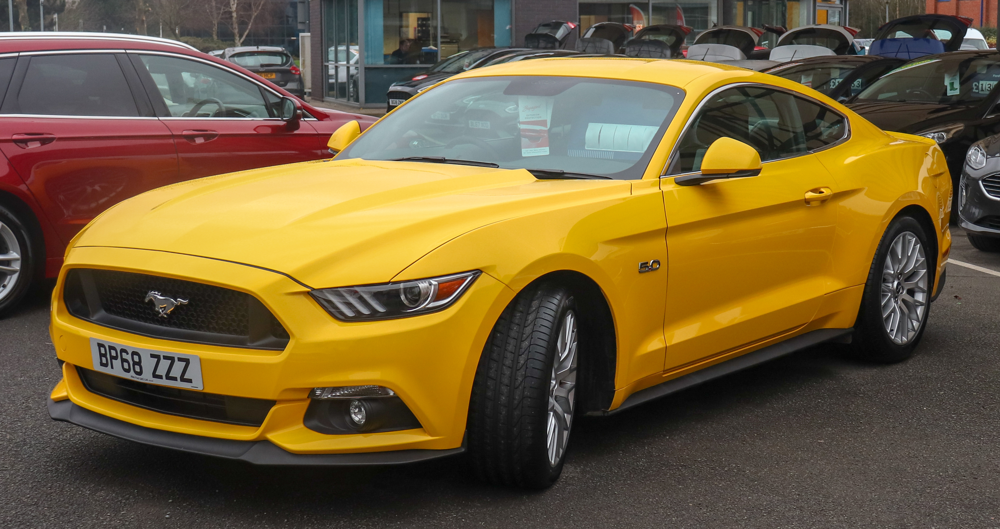
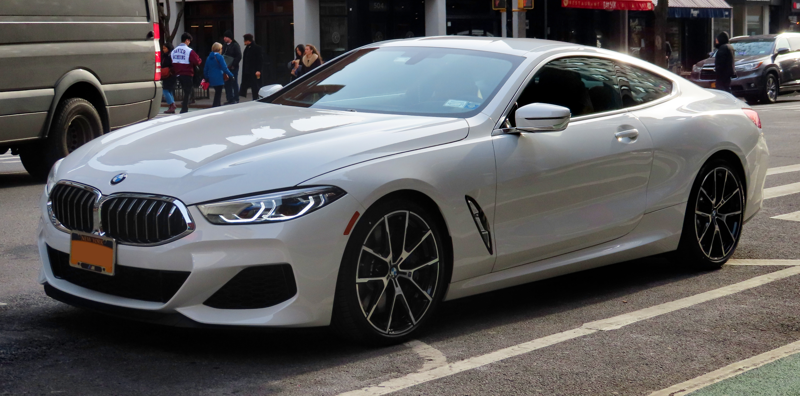
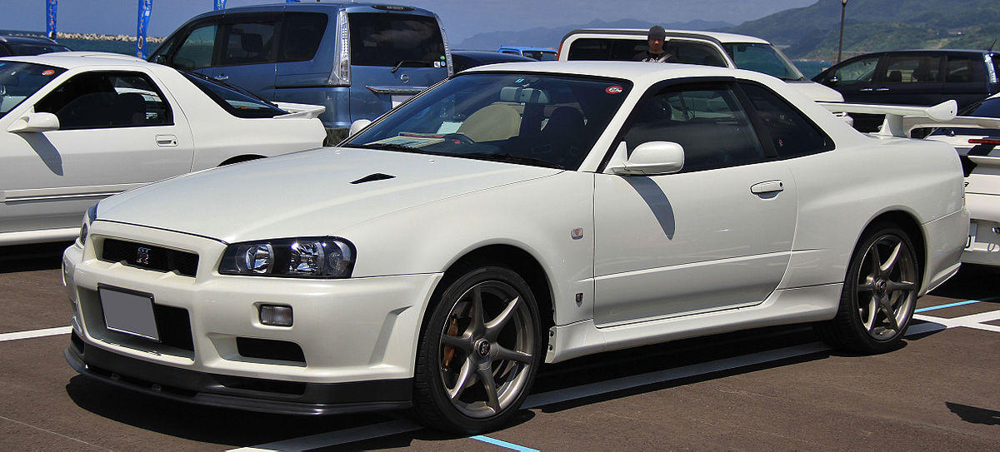

Ford Mustang

Ford Mustang — культовый автомобиль класса Pony Car производства Ford Motor Company. На автомобиле размещается не эмблема Ford, а специальная эмблема Mustang.
Изначальный вариант 11233 (1964/65—1973 гг.) был создан на базе агрегатов семейного седана Ford Falcon (создатель Ли Якокка и его команда).
Первый серийный Mustang сошёл с конвейера 9 марта 1964 года как модель 1965 года (в среде коллекционеров относительно Mustang выпуска до осени 1964 года употребляется неофициальное обозначение «модель 1964 1/2»).
17 апреля автомобиль был представлен публике в Нью-Йорке, а 19 апреля — показан по всем трём американским телевещательным сетям.
Продвижение автомобиля сопровождалось активной рекламной кампанией. Это была одна из самых удачных премьер в истории автомобилестроения.
Читать далее...
BMW M8

BMW 8, или восьмая серия BMW, — автомобили серии класса Gran Turismo.
8 cерия была представлена в 1990 году в кузове E31 и была доступна только в виде двухдверного купе. В нее устанавливались безнаддувные бензиновые двигатели V8 и V12. E31 начали производить, как только закончилось производство 6 серии в кузове E24, однако он не считается прямым преемником. Производство было прекращено в 1999 году из-за плохих продаж.
Читать далее...
Toyota Supra

Toyota Supra (яп. トヨタ・スープラ) — серийный спортивный автомобиль, выпускающийся компанией Toyota с 1978 года.
Дизайн Supra был перенят от Toyota Celica, но кузов стал длиннее и шире. Начиная с середины 1986 года, Supra отделилась от Celica, став самостоятельной моделью.
В связи с этим Toyota перестала использовать префикс Celica, и автомобиль стал именоваться просто Supra.
Первое, второе и третье поколения Supra собирались на заводе в Тахаре, а четвёртое и пятое поколение — на заводе в городе Тоёта в Японии.
Читать далее...
Nissan Skyline

Nissan Skyline — автомобиль, выпускаемый в Японии с 1957 года, сначала фирмой Prince Motor,
а затем концерном Nissan Motor, купившим Prince в 1966 году.
К настоящему времени выпущено 13 поколений этого автомобиля.
Первый Skyline с заводским обозначением ALSI-1 сходил с конвейера с 1957 по 1963 под маркой Prince и по меркам Японии считался роскошным автомобилем. Всего было продано 33 759 экземпляров, в основном — с кузовами седан и универсал.
Автомобиль, представленный 24 апреля 1957 года, построила компания Prince Motor Company, основанная на базе производившей военные самолёты Tachikawa Aircraft Company в 1952 году и названная в честь японского наследного принца Акихито. Skyline первого поколения был построен на базе коммерческого автомобиля Prince Skyway.
Читать далее...